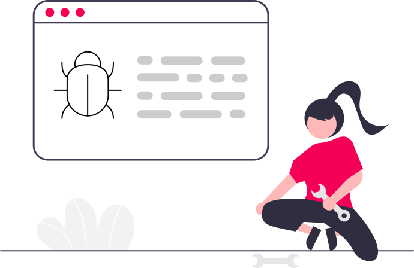

字阶 · 行高
页面标题 26 / 32
区块 20 / 28 · 卡片标题 16 / 24
正文 14 / 20 · 次要 13 / 20 · 12 / 20
元信息 11 / 16 · 徽标 10 / 16
统一用「暖纸 + 翡翠绿」的 Material 3 语汇重绘全部 23 个界面。画板 360 dp，页边距 16，版心 328， 按 4 列 × 76 + 3 × 8 沟槽排布；所有间距落在 4 dp 基线上，字阶 10 – 34 的行高都是 4 的倍数， 圆角只保留 8 / 12 / 16 / 20 / 28 / 全圆六档，因此跨页跳转时视觉不跳。搜索框、筛选、结果来源切换、 下载进度都给出真实状态而非占位灰条。按 G 键叠加网格线。
三体
Normal People
Breach Road
Educated
文化大革命期间，一次绝密军事计划把人类的信息发向宇宙。四光年外，三体文明被迫迁徙， 并向地球派出了舰队。多年后，纳米科学家汪淼在一款虚拟游戏里，触到了这场跨越星海的阴谋。
点“下载本书”后，同一位置变为“正在下载 42%”，按钮底色从左向右随进度填充；点击可暂停/继续。完成后自动切换为“打开 / 删除”，失败则变为“重试”。 进度来自 DownloadManager 的实时任务，离开详情页再回来仍能看到。手动下载页持续识别倒计时结束后动态出现的下载链接，获取后自动返回应用并创建任务。
/slow_download/<id>/0/0），按钮显示剩余秒数；倒计时结束后自动抓取下载链接并入队，不弹页面。只有站点要求登录或验证过不去时，才退回可见下载页（可登录/过盾后继续）。LibGen / Z-Library / Anna's Archive 仍按原有直链或后台抓镜像流程。
详情加载失败时只保留错误提示与“重试”，底部不再显示“下载本书”或加载转圈；只有仍在加载时才显示禁用的下载按钮与进度指示。
发现页与搜索页共用此行为：失败任务和已完成任务都可向左或向右滑动移除——失败露出删除底色，已完成露出中性的移除底色；进行中、暂停等其他任务不可滑动移除。 不滑动也行：已完成任务会在 30 秒后自动消失。移除只影响这张应用内卡片（失败任务仍保留“重试 / 验证”入口），最后一项移除后整个下载容器隐藏。
页头“选择”进入多选，自动切到“已完成”；点行勾选，底部可全选/取消全选。删除时可选“同时移除文件”，一次处理所选记录。
试试更短的关键词、作者名，或用 ISBN 精确检索。WeLib 本次未返回结果。
四个书源并行检索。关闭的来源不会发起请求，镜像地址由 SLUM 目录下发。
浅色
深色
跟随系统
浅色
深色
跟随系统
不提供书籍内容，仅做镜像检索与下载。
请支持正版。
切换结果视图；自动模式会合并全部书源。
默认只移除记录；本地文件会保留在下载目录。
为了在后台显示下载进度，OpenlibExtended 需要通知权限。这样即使应用最小化，也能跟踪书籍下载进度。

书源返回了应用无法识别的页面。请切换到其他书源或镜像后重试；若持续出现，请打开诊断详情并分享日志。
书源返回了应用无法识别的页面。
位置：搜索结果 · query=三体 · 来源 LibGen